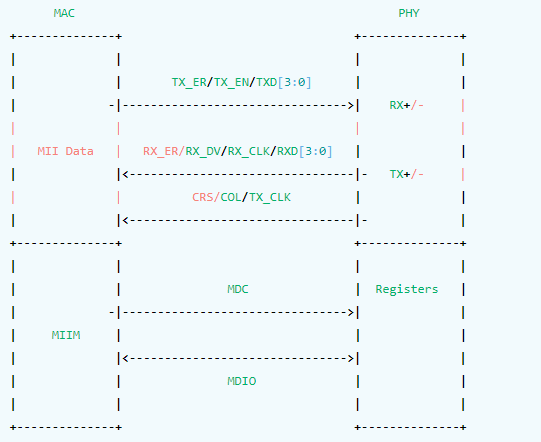
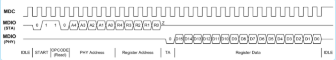
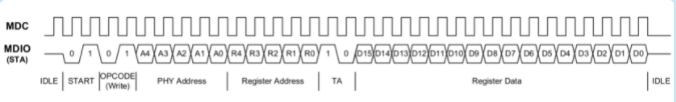
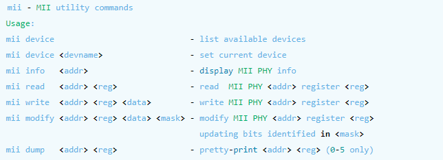
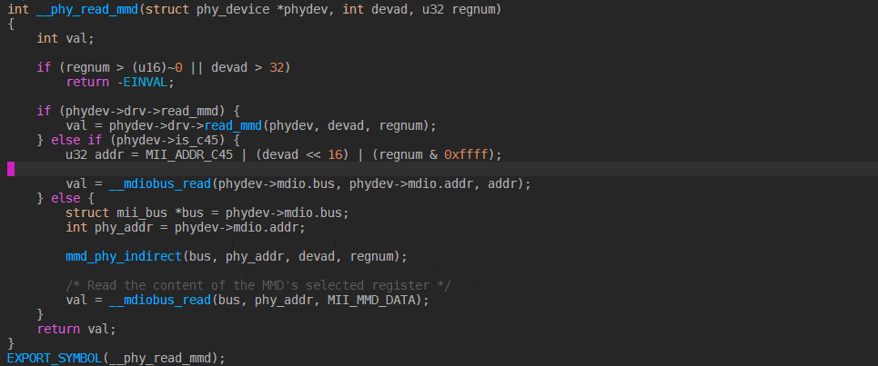

4.10.1. MDIO
4.10.1.1. MDIO原理
MII是一个标准接口，用于连接MAC和PHY，MII是IEEE-802.3定义的以太网标准，MII接口可以同时控制多个PHY。MII包含两个接口
一个数据接口，用户MAC和PHY之间收发Ethernet数据
一个管理接口，这个管理接口通常称为MDIO,或者SMI。这个接口用于MAC从PHY读写相关管理寄存器的值
拓扑图如下

mdio包括两根信号线，分别如下:
MDC时钟线：MDIO的时钟信号，由MAC驱动PHY
MDIO数据线: 双向数据线，用于在MAC和PHY之间传输配置信息
mdio总线支持MAC作为主设备，PHY作为从设备，MDIO支持两种时许，分别为 Clasuse 22 和 Clause 45
4.10.1.1.1. MDIO clause 22
MDIO clause 22是MDIO使用的一种信号时序，在这个信号时序模式，MAC先向MDIO信号线上拍32个周期，接着传输16bit的控制位。16个信号位包含了2个开始位，2bits 读写控制位，5bits的PHY地址，5bits的寄存器地址，以及2bits的 翻转位。当进行写操作时，MAC在接下来的周期中提供地址和数据。当进行读操作时，PHY会翻转MDIO之后向MDIO信号线上发送数据
MDIO read

MDIO write

4.10.1.2. uboot中通过命令访问MDIO
uboot中提供了mii工具去操作MDIO总线，用法如下

4.10.1.3. uboot中通过源码访问MDIO
uboot中进行MDIO操作可以参考如下代码
/* use current device */
devname = miiphy_get_current_dev();
/* mdio write */
miiphy_write (devname, addr, reg, data);
/* mdio read */
miiphy_read(devname, addr, reg, &val)
4.10.1.4. kernel中通过源码访问MDIO
bs = phy_read_mmd(phydev, DP83867_DEVADDR, DP83867_STRAP_STS2);
phy_write_mmd(phydev, DP83867_DEVADDR, DP83867_RGMIICTL, val);
phy_read_mmd 会调用以下函数，从而达到调用mdio接口函数

4.10.1.5. 用户空间通过命令访问MDIO
用户空间可以通过ethtool命令去访问mdio
4.10.1.6. 用户空间通过源码访问MDIO
…待完成